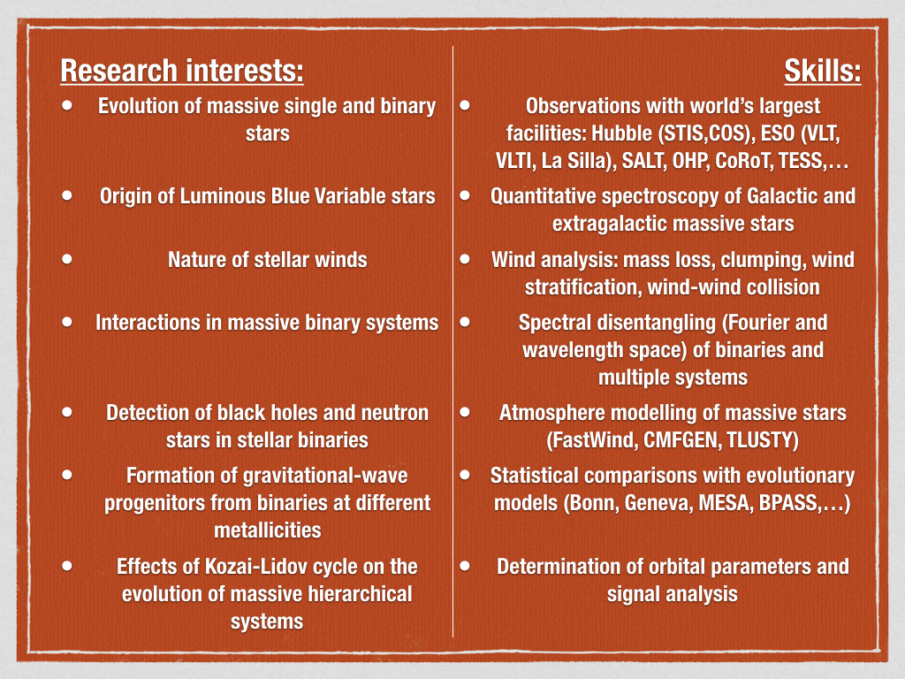

Research interests & Publications

My list of publications contains 70 publications (44 referred, 21 as first author, h-index 18).
I am an observer working as a postdoctoral researcher at KU Leuven. My research focuses on massive stars. I am using ground and space-based facilities on world-class observational instruments through open time competition. Expert in multi-wavelength (Far-UV, Optical, Far-IR) analysis of massive stars with extensive expertise in spectroscopy, photometry, atmosphere modelling and spectral disentangling to measure fundamental properties of massive single and multiple stars that lead to improve our understanding of their formation, evolution and final fates.
If you want to know more about me, it is right here...
My list of publications contains 70 publications (44 referred, 21 as first author, h-index 18).
As an academic, transmission of knowledge is a big part of my daily work. During my free time, I also like to raise awareness of people among the beauty of dark night.
Find out more about my teaching and outreach experiences here...
If you wish to get in contact with me, you will find all the informations below. Do not hesitate to reach me via all the different platforms.